1. Saved pre-demo overview
PRE-RECORDED, VERIFIED LAB RESULTS · This page displays saved evidence. It does not run a server or call an API.
| Run detail | Saved value |
|---|---|
| Model | gemini-3.5-flash-lite |
| Recorded run | 2026-11-19T00:56:59+05:00 |
| Host | rohaan-psylab / WSL Ubuntu |
| Capture scope | lo · 127.0.0.1 · TCP port 9999 |
| Original run network | Gemini over HTTPS; instructor-approved cloud exception |
| Viewing this pack | Offline; no credentials or API calls required |
Easy complete notes: project guide and formulas · discussion and viva · requirements review · screenshot date-edit record.
Additional independently checked live browser run: five-case live validation · its raw PCAP · read the separate-run explanation.
Full actual inputs/replies and output explanation
What the project demonstrates
Five fictional concerns were encrypted and sent through the instructor’s local TCP protocol. The replies came from Gemini, were encrypted on the local server, and were captured on loopback. Frequency analysis recovered each Affine key; independent checks confirmed the inputs, replies and re-encryption.
Client → encrypted local TCP → server → Gemini HTTPS → encrypted local TCP reply. No API key is included in this evidence pack.
Roman Urdu presentation order · Open raw capture · Printable evidence report
2. All five synthetic test cases
| Case | Username | Mood | Concern |
|---|---|---|---|
| 1 | Rohaan | 3 | My final exams start next week and I cannot sleep because I keep thinking I will fail. |
| 2 | Rohaan | 4 | I moved to a new city for university and I have not made any friends yet, the weekends feel very empty. |
| 3 | Rohaan | 5 | I am working part time and studying full time, and I feel tired all the time and fall behind on assignments. |
| 4 | Rohaan | 6 | I had a big argument with my older brother and now we are not talking, and it is bothering me every day. |
| 5 | Rohaan | 7 | My final year project deadline is close, my group members are not replying, and I feel like I have to do everything alone. |
The scenarios cover exam anxiety, loneliness, work/study balance, a family disagreement and a group-project deadline. These are synthetic data, not patient records.
3. Captured ciphertext and raw evidence
These JSON values were reassembled from the PCAP. Requests use UTF-8 nibble armor before Affine encryption; replies are directly encrypted uppercase English. Cleartext mood selects a different key schedule per session.
Session 1 · TCP stream 0
Captured client → server
{
"username_enc": "PUWHWKWNWNWA",
"mood": 3,
"message_enc": "ITDRUGWWWRWAWNWMUGWPDKWNWTDBUGDBDIWNDUDIUGWAWPDKDIUGDDWPWPWFUGWNWAWIUGIRUGWBWNWAWAWHDIUGDBWMWPWPDGUGWUWPWBWNDPDBWPUGIRUGWFWPWPDGUGDIWKWRWAWFWRWAWDUGIRUGDDWRWMWMUGWWWNWRWMUA",
"api_key_enc": ""
}Captured server → client
{
"ciphertext": "KJ KC UAMHFIJIFS QTBIVCJGTBGNFI JDGJ SAQ GVI PIIFKTW AXIVEDIFMIB VKWDJ TAE WKXIT DAE MQUD HVICCQVI CQVVAQTBC JDICI QHUAMKTW ILGMC EDIT SAQV MKTB VGUIC GJ NIBJKMI AQV NABKIC CJGS CJQUY KT G CJVICC VICHATCI JDGJ MGYIC VICJKTW TIGVFS KMHACCKNFI VADGGT SAQ DGXI HVIHGVIB ILJITCKXIFS PAV JDKC MAMITJ GTB SAQV EAVJD KC TIXIV BIPKTIB NS G CKTWFI JICJ CUAVI JVS CIJJKTW GCKBI JEITJS MKTQJIC IGVFKIV KT JDI IXITKTW JA EVKJI BAET SAQV EAVVKIC EDKUD CKWTGFC SAQV NVGKT JDGJ KJ KC CGPI JA FIJ JDIM WA PAV JDI TKWDJ SAQ MKWDJ GFCA HVGUJKUI CFAE VDSJDMKU NVIGJDKTW KT NIB JA DIFH FAEIV SAQV DIGVJ VGJI GTB CDKPJ GEGS PVAM HGTKU VIMIMNIV JDGJ SAQ BA TAJ TIIB JA NI HIVPIUJ JA CQUUIIB GTB JGYKTW UGVI AP SAQV VICJ KC RQCJ GC KMHAVJGTJ GC CJQBSKTW NI WITJFI EKJD SAQVCIFP JATKWDJ YTAEKTW SAQ DGXI JDI KTTIV CJVITWJD JA DGTBFI EDGJIXIV JAMAVVAE NVKTWC"
}Session 2 · TCP stream 1
Captured client → server
{
"username_enc": "BAKNKCKRKRKE",
"mood": 4,
"message_enc": "SLAIKVKNTKKBKSAITSKNAIKRAIKEKBTTAIKJKLTSTLAIKKKNTAAITBKEKLTKKBTATJKLTSTLAIKRKEKSAISLAIKCKRTKKBAIKEKNTSAIKVKRKSKBAIKRKETLAIKKTAKLKBKEKSTJAITLKBTSAMAITSKCKBAITTKBKBKDKBKEKSTJAIKKKBKBKMAITKKBTATLAIKBKVTITSTLAE",
"api_key_enc": ""
}Captured server → client
{
"ciphertext": "MEPCVK XE IV GVBIMCDCIF ACXQ IVJ BIACVK SMNXQ YSSUSVJO YTCDS IJLGOXCVK XE GVCPSFOCXQ DCBS CO I KSVGCVSDQ EPSFYTSDMCVK SHNSFCSVAS SONSACIDDQ YTSV QEG IFS AFIPCVK AEVVSAXCEV CX CO AEMNDSXSDQ VEFMID XE BSSD DEVSDQ FCKTX VEY FETIIV IO RGCDJCVK I RFIVJVSY OEACID ACFADS XIUSO REXT XCMS IVJ PGDVSFIRCDCXQ CVOXSIJ EB YICXCVK BEF BFCSVJO XE MIKCAIDDQ INNSIF XFQ OTCBXCVK QEGF BEAGO XEYIFJ SVPCFEVMSVXO YTSFS QEG VIXGFIDDQ OTIFS CVXSFSOXO YCXT EXTSFO DCUS LECVCVK I AIMNGO ADGR OXGJQCVK CV I AEBBSS OTEN EF IXXSVJCVK I DEAID YEFUOTEN SPSFQ XCVQ OXSN QEG XIUS EGXOCJS QEGF AEMBEFX ZEVS TSDNO NDIVX XTS OSSJO BEF MSIVCVKBGD FSDIXCEVOTCNO RS KSVXDS YCXT QEGFOSDB XTFEGKT XTCO XFIVOCXCEV IVJ XFSIX SIAT YSSUSVJ IO IV ENNEFXGVCXQ XE SHNDEFS QEGF VSY TEMS IX QEGF EYV NIAS"
}Session 3 · TCP stream 2
Captured client → server
{
"username_enc": "NGYTYUYVYVYI",
"mood": 5,
"message_enc": "CFGKYVYXGKJJYTJGYBYFYIYJGKJKYVJGJCGKJCYFYXYNGKYVYIYCGKJRJCJNYCJFYFYIYJGKYYJNYMYMGKJCYFYXYNGMGKYVYIYCGKCFGKYYYNYNYMGKJCYFJGYNYCGKYVYMYMGKJCYUYNGKJCYFYXYNGKYVYIYCGKYYYVYMYMGKYGYNYUYFYIYCGKYTYIGKYVJRJRYFYJYIYXYNYIJCJRGI",
"api_key_enc": ""
}Captured server → client
{
"ciphertext": "VKBKXGUXY K TKPLLUMC FIV SULJ NWBBLUMC ALWRUCA UA KX UXGPCRUVBC GJKBBCXYC KXR UL MKQCA GIMTBCLC ACXAC LJKL OIW KPC NCCBUXY GIMTBCLCBO CDJKWALCR PUYJL XIS SJCX OIWP TBKLC UA IHCPNBISUXY CHCX LJC AMKBBCAL LKAQA GKX ALKPL LI NCCB BUQC UXAWPMIWXLKVBC MIWXLKUXA U SKXL OIW LI QXIS PIJKKX LJKL ALPWYYBUXY LI QCCT WT WXRCP LJUA UMMCXAC TPCAAWPC UA XIL K TCPAIXKB NKUBWPC VWL PKLJCP K GBCKP AUYX LJKL OIWP GWPPCXL AGJCRWBC UA WXAWALKUXKVBC BCL WA BIIQ KL SJCPC SC MUYJL YCXLBO PCGBKUM AIMC IN OIWP LUMC KXR CXCPYO TCPJKTA VO AGKBUXY VKGQ OIWP SIPQ JIWPA IP PCXCYILUKLUXY KAAUYXMCXL RCKRBUXCA SULJ OIWP TPINCAAIPA PCMCMVCP LI LPCKL OIWPACBN SULJ RCCT GIMTKAAUIX RWPUXY LJUA JCKHO ACKAIX KGQXISBCRYUXY LJKL OIWP MCXLKB JCKBLJ KXR SCBBVCUXY MWAL KBSKOA GIMC VCNIPC TCPNCGLUIX SC GKX SIPQ LIYCLJCP LI VWUBR K MKXKYCKVBC PIWLUXC LJKL TPILCGLA OIWP ABCCT KXR JCBTA OIW GKLGJ OIWP VPCKLJ"
}Session 4 · TCP stream 3
Captured client → server
{
"username_enc": "JQYDYCYBYBYO",
"mood": 6,
"message_enc": "URQMYCYBYUQMYBQMYQYRYNQMYBNQYNNJYZYJYONUQMNNYRNUYCQMYZNRQMYDYKYUYJNQQMYQNQYDNUYCYJNQQMYBYOYUQMYOYDNNQMNNYJQMYBNQYJQMYOYDNUQMNUYBYKYVYRYOYNQKQMYBYOYUQMYRNUQMYRNFQMYQYDNUYCYJNQYRYOYNQMYZYJQMYJNYYJNQNRQMYUYBNRQO",
"api_key_enc": ""
}Captured server → client
{
"ciphertext": "CL CW QOKDVULUVI AZFUHWLMZFMBVU LNML LNCW AZHUWOVPUF LUZWCOZ ECLN IOAH WCBVCZY CW EUCYNCZY NUMPCVI OZ IOAH KCZF MZF FCWHADLCZY IOAH FMCVI DUMQU JMKCVI QOZJVCQLW OJLUZ QAL LNU FUUDUWL BUQMAWU LNU NCWLOHI EU WNMHU ECLN LNUK KMGUW UPUHI FCWMYHUUKUZL JUUV DUHWOZMV MZF NCYNWLMGUW HCYNL ZOE HONMMZ IOA KCYNL BU EHUWLVCZY ECLN M KCT OJ NAHL DHCFU MZF LNU NUMPI MQNU OJ KCWWCZY LNU QOZZUQLCOZ IOA AWAMVVI WNMHU CZWLUMF OJ EMCLCZY JOH NCK LO KMGU LNU JCHWL KOPU QOZWCFUH HUMQNCZY OAL ECLN M VOEDHUWWAHU LUTL RAWL LO MQGZOEVUFYU LNML IOA NMLU BUCZY ML OFFW IOA FO ZOL NMPU LO JCT LNU UZLCHU MHYAKUZL CZ OZU QOZPUHWMLCOZ BAL WCKDVI BHUMGCZY LNU WCVUZQU QMZ NUVD VCJL LNML FMCVI QVOAF JHOK IOAH WNOAVFUHW YCPU IOAHWUVJ DUHKCWWCOZ LO LMGU LNML JCHWL WKMVV WLUD LOEMHF NUMVCZY GZOECZY LNML DHOLUQLCZY IOAH BOZF CW JMH KOHU CKDOHLMZL LNMZ ECZZCZY LNU MHYAKUZL"
}Session 5 · TCP stream 4
Captured client → server
{
"username_enc": "LSAFAEADADAQ",
"mood": 7,
"message_enc": "WBPTSOAAATAQADAMSOPTALADPSSOPOPSAFAIALAHPWSOAWALADAWAMATAQALSOATPHSOAHAMAFPHALSMSOABPTSOAPPSAFPLPOSOABALABASALPSPHSOADPSALSOAQAFPWSOPSALPOAMPTATAQAPSMSOADAQAWSOWTSOAAALALAMSOAMATAXALSOWTSOAEADPAALSOPWAFSOAWAFSOALPAALPSPTPWAEATAQAPSOADAMAFAQALSQ",
"api_key_enc": ""
}Captured server → client
{
"ciphertext": "EN EY SQMFXWNWXK CBHWJYNOBHODXW NPON KQC OJW LWWXEBA QRWJGPWXMWH JEAPN BQG GENP NPEY PWORK OSOHWMES DCJHWB OBH CBJWYFQBYERW FWWJY SOJJKEBA NPW GWEAPN QL O NWOM FJQTWSN OXMQYN WBNEJWXK QB KQCJ QGB EY OB WVPOCYNEBA OBH HWWFXK YNJWYYLCX YENCONEQB NQ BOREAONW JQPOOB FXWOYW JWMWMDWJ NPON KQC HQ BQN PORW NQ YCLLWJ EB YEXWBSW OBH JWOSPEBA QCN LQJ YCFFQJN EY O YEAB QL YNJWBANP JONPWJ NPOB HWLWON NOIW O HWWF DJWONP OBH NJK DJWOIEBA NPW JWMOEBEBA GQJIXQOH HQGB EBNQ YMOXXWJ MOBOAWODXW HOEXK NOYIY YQ KQC HQ BQN DCJB QCN SQMFXWNWXK EN GQCXH OXYQ DW GEYW NQ HQSCMWBN KQCJ EBHEREHCOX WLLQJNY OBH SQMMCBESONW KQCJ SQBSWJBY SXWOJXK NQ KQCJ FJQLWYYQJ DWLQJW EN EY NQQ XONW KQC OJW JWYEXEWBN OBH DK LQSCYEBA YNJESNXK QB GPON EY GENPEB KQCJ SQBNJQX KQC GEXX YCSSWYYLCXXK SJQYY NPEY LEBEYP XEBW"
}4. Recovered Affine keys and mathematical proof
Plaintext is readable text; ciphertext is its encrypted form. An Affine key is the pair (a, b). With A=0 … Z=25:
Encryption: C = (a·P + b) mod 26 Decryption: P = inverse(a)·(C − b) mod 26 gcd(a,26)=1; 12 valid multipliers × 26 shifts = 312 candidates.
| Case | a | b | a inverse | Best χ² | Next-best χ² | Re-encryption |
|---|---|---|---|---|---|---|
| 1 | 7 | 6 | 15 | 31.23 | 908.37 | MATCH |
| 2 | 9 | 8 | 3 | 43.62 | 983.93 | MATCH |
| 3 | 11 | 10 | 19 | 46.20 | 1126.19 | MATCH |
| 4 | 15 | 12 | 7 | 24.81 | 1006.59 | MATCH |
| 5 | 15 | 14 | 7 | 29.59 | 850.57 | MATCH |
The ciphertext-only attack scores all valid keys by English-frequency chi-squared, separately for each session. It does not import the server or use the cleartext mood schedule. A separate verification script checks those only after recovery.
Full calculation for every session
SESSION 1: 689 ciphertext letters; mood is not used for recovery.
Most frequent ciphertext letters: [('I', 87), ('J', 68), ('V', 55), ('A', 50), ('T', 49), ('K', 48)]
Test all 312 valid Affine candidates; rank decrypted English by chi-squared.
Leading candidates (chi-squared, a, b): [(31.233488126430014, 7, 6), (908.3686918399876, 5, 22), (1080.894408787598, 23, 21), (1092.3099199969051, 23, 8), (1148.302529835498, 9, 8)]
Winning mapping: E -> I, T -> J.
4a+b = 8 (mod 26); 19a+b = 9 (mod 26).
Subtraction gives 15a = 1 (mod 26).
26 = 1*15+11; 15 = 1*11+4; 11 = 2*4+3; 4 = 1*3+1.
Back substitution: 1 = 7*15 - 4*26; inverse(15) = 7.
a = 7*1 mod 26 = 7; b = 8-4*7 mod 26 = 6.
gcd(7,26)=1. Extended Euclid for decryption:
26 = 3 x 7 + 5
7 = 1 x 5 + 2
5 = 2 x 2 + 1
2 = 2 x 1 + 0
inverse(a)=15; 7*15 = 4*26 + 1.
D(y) = 15*(y-6) mod 26.
English E/T mappings are candidate hypotheses, not guaranteed rank-1/rank-2 identities.
Independent checks: decoded UTF-8 request fields and re-encryption equality.
SESSION 2: 637 ciphertext letters; mood is not used for recovery.
Most frequent ciphertext letters: [('S', 71), ('V', 56), ('C', 53), ('E', 50), ('X', 50), ('I', 48)]
Test all 312 valid Affine candidates; rank decrypted English by chi-squared.
Leading candidates (chi-squared, a, b): [(43.619901657679584, 9, 8), (983.928089948428, 11, 18), (1195.189907791559, 25, 10), (1221.8691125260505, 19, 18), (1301.5490838385758, 11, 5)]
Winning mapping: E -> S, T -> X.
4a+b = 18 (mod 26); 19a+b = 23 (mod 26).
Subtraction gives 15a = 5 (mod 26).
26 = 1*15+11; 15 = 1*11+4; 11 = 2*4+3; 4 = 1*3+1.
Back substitution: 1 = 7*15 - 4*26; inverse(15) = 7.
a = 7*5 mod 26 = 9; b = 18-4*9 mod 26 = 8.
gcd(9,26)=1. Extended Euclid for decryption:
26 = 2 x 9 + 8
9 = 1 x 8 + 1
8 = 8 x 1 + 0
inverse(a)=3; 9*3 = 1*26 + 1.
D(y) = 3*(y-8) mod 26.
English E/T mappings are candidate hypotheses, not guaranteed rank-1/rank-2 identities.
Independent checks: decoded UTF-8 request fields and re-encryption equality.
SESSION 3: 731 ciphertext letters; mood is not used for recovery.
Most frequent ciphertext letters: [('C', 92), ('L', 65), ('K', 60), ('X', 51), ('I', 50), ('P', 49)]
Test all 312 valid Affine candidates; rank decrypted English by chi-squared.
Leading candidates (chi-squared, a, b): [(46.19996413258617, 11, 10), (1126.1900571065064, 19, 24), (1271.994722885726, 25, 15), (1373.636112890806, 25, 2), (1388.8425685686123, 3, 2)]
Winning mapping: E -> C, T -> L.
4a+b = 2 (mod 26); 19a+b = 11 (mod 26).
Subtraction gives 15a = 9 (mod 26).
26 = 1*15+11; 15 = 1*11+4; 11 = 2*4+3; 4 = 1*3+1.
Back substitution: 1 = 7*15 - 4*26; inverse(15) = 7.
a = 7*9 mod 26 = 11; b = 2-4*11 mod 26 = 10.
gcd(11,26)=1. Extended Euclid for decryption:
26 = 2 x 11 + 4
11 = 2 x 4 + 3
4 = 1 x 3 + 1
3 = 3 x 1 + 0
inverse(a)=19; 11*19 = 8*26 + 1.
D(y) = 19*(y-10) mod 26.
English E/T mappings are candidate hypotheses, not guaranteed rank-1/rank-2 identities.
Independent checks: decoded UTF-8 request fields and re-encryption equality.
SESSION 4: 704 ciphertext letters; mood is not used for recovery.
Most frequent ciphertext letters: [('U', 77), ('L', 70), ('C', 59), ('Z', 52), ('O', 51), ('M', 49)]
Test all 312 valid Affine candidates; rank decrypted English by chi-squared.
Leading candidates (chi-squared, a, b): [(24.807034954856398, 15, 12), (1006.5947456376502, 7, 24), (1101.069930596142, 1, 20), (1226.4175175033786, 1, 7), (1371.914815581205, 23, 20)]
Winning mapping: E -> U, T -> L.
4a+b = 20 (mod 26); 19a+b = 11 (mod 26).
Subtraction gives 15a = 17 (mod 26).
26 = 1*15+11; 15 = 1*11+4; 11 = 2*4+3; 4 = 1*3+1.
Back substitution: 1 = 7*15 - 4*26; inverse(15) = 7.
a = 7*17 mod 26 = 15; b = 20-4*15 mod 26 = 12.
gcd(15,26)=1. Extended Euclid for decryption:
26 = 1 x 15 + 11
15 = 1 x 11 + 4
11 = 2 x 4 + 3
4 = 1 x 3 + 1
3 = 3 x 1 + 0
inverse(a)=7; 15*7 = 4*26 + 1.
D(y) = 7*(y-12) mod 26.
English E/T mappings are candidate hypotheses, not guaranteed rank-1/rank-2 identities.
Independent checks: decoded UTF-8 request fields and re-encryption equality.
SESSION 5: 649 ciphertext letters; mood is not used for recovery.
Most frequent ciphertext letters: [('W', 70), ('N', 56), ('Q', 56), ('O', 51), ('B', 49), ('E', 46)]
Test all 312 valid Affine candidates; rank decrypted English by chi-squared.
Leading candidates (chi-squared, a, b): [(29.592364829304522, 15, 14), (850.5677770013508, 1, 22), (872.3022335510128, 23, 22), (1042.9919555813983, 7, 0), (1116.200067462007, 1, 9)]
Winning mapping: E -> W, T -> N.
4a+b = 22 (mod 26); 19a+b = 13 (mod 26).
Subtraction gives 15a = 17 (mod 26).
26 = 1*15+11; 15 = 1*11+4; 11 = 2*4+3; 4 = 1*3+1.
Back substitution: 1 = 7*15 - 4*26; inverse(15) = 7.
a = 7*17 mod 26 = 15; b = 22-4*15 mod 26 = 14.
gcd(15,26)=1. Extended Euclid for decryption:
26 = 1 x 15 + 11
15 = 1 x 11 + 4
11 = 2 x 4 + 3
4 = 1 x 3 + 1
3 = 3 x 1 + 0
inverse(a)=7; 15*7 = 4*26 + 1.
D(y) = 7*(y-14) mod 26.
English E/T mappings are candidate hypotheses, not guaranteed rank-1/rank-2 identities.
Independent checks: decoded UTF-8 request fields and re-encryption equality.
5. Complete decrypted sessions
Session 1 — fully recovered text
Username: Rohaan
Concern: My final exams start next week and I cannot sleep because I keep thinking I will fail.
IT IS COMPLETELY UNDERSTANDABLE THAT YOU ARE FEELING OVERWHELMED RIGHT NOW GIVEN HOW MUCH PRESSURE SURROUNDS THESE UPCOMING EXAMS WHEN YOUR MIND RACES AT BEDTIME OUR BODIES STAY STUCK IN A STRESS RESPONSE THAT MAKES RESTING NEARLY IMPOSSIBLE ROHAAN YOU HAVE PREPARED EXTENSIVELY FOR THIS MOMENT AND YOUR WORTH IS NEVER DEFINED BY A SINGLE TEST SCORE TRY SETTING ASIDE TWENTY MINUTES EARLIER IN THE EVENING TO WRITE DOWN YOUR WORRIES WHICH SIGNALS YOUR BRAIN THAT IT IS SAFE TO LET THEM GO FOR THE NIGHT YOU MIGHT ALSO PRACTICE SLOW RHYTHMIC BREATHING IN BED TO HELP LOWER YOUR HEART RATE AND SHIFT AWAY FROM PANIC REMEMBER THAT YOU DO NOT NEED TO BE PERFECT TO SUCCEED AND TAKING CARE OF YOUR REST IS JUST AS IMPORTANT AS STUDYING BE GENTLE WITH YOURSELF TONIGHT KNOWING YOU HAVE THE INNER STRENGTH TO HANDLE WHATEVER TOMORROW BRINGS
Exact input / client-reply match verifiedSession 2 — fully recovered text
Username: Rohaan
Concern: I moved to a new city for university and I have not made any friends yet, the weekends feel very empty.
MOVING TO AN UNFAMILIAR CITY AND FACING EMPTY WEEKENDS WHILE ADJUSTING TO UNIVERSITY LIFE IS A GENUINELY OVERWHELMING EXPERIENCE ESPECIALLY WHEN YOU ARE CRAVING CONNECTION IT IS COMPLETELY NORMAL TO FEEL LONELY RIGHT NOW ROHAAN AS BUILDING A BRANDNEW SOCIAL CIRCLE TAKES BOTH TIME AND VULNERABILITY INSTEAD OF WAITING FOR FRIENDS TO MAGICALLY APPEAR TRY SHIFTING YOUR FOCUS TOWARD ENVIRONMENTS WHERE YOU NATURALLY SHARE INTERESTS WITH OTHERS LIKE JOINING A CAMPUS CLUB STUDYING IN A COFFEE SHOP OR ATTENDING A LOCAL WORKSHOP EVERY TINY STEP YOU TAKE OUTSIDE YOUR COMFORT ZONE HELPS PLANT THE SEEDS FOR MEANINGFUL RELATIONSHIPS BE GENTLE WITH YOURSELF THROUGH THIS TRANSITION AND TREAT EACH WEEKEND AS AN OPPORTUNITY TO EXPLORE YOUR NEW HOME AT YOUR OWN PACE
Exact input / client-reply match verifiedSession 3 — fully recovered text
Username: Rohaan
Concern: I am working part time and studying full time, and I feel tired all the time and fall behind on assignments.
BALANCING A PARTTIME JOB WITH FULLTIME STUDIES IS AN INCREDIBLE CHALLENGE AND IT MAKES COMPLETE SENSE THAT YOU ARE FEELING COMPLETELY EXHAUSTED RIGHT NOW WHEN YOUR PLATE IS OVERFLOWING EVEN THE SMALLEST TASKS CAN START TO FEEL LIKE INSURMOUNTABLE MOUNTAINS I WANT YOU TO KNOW ROHAAN THAT STRUGGLING TO KEEP UP UNDER THIS IMMENSE PRESSURE IS NOT A PERSONAL FAILURE BUT RATHER A CLEAR SIGN THAT YOUR CURRENT SCHEDULE IS UNSUSTAINABLE LET US LOOK AT WHERE WE MIGHT GENTLY RECLAIM SOME OF YOUR TIME AND ENERGY PERHAPS BY SCALING BACK YOUR WORK HOURS OR RENEGOTIATING ASSIGNMENT DEADLINES WITH YOUR PROFESSORS REMEMBER TO TREAT YOURSELF WITH DEEP COMPASSION DURING THIS HEAVY SEASON ACKNOWLEDGING THAT YOUR MENTAL HEALTH AND WELLBEING MUST ALWAYS COME BEFORE PERFECTION WE CAN WORK TOGETHER TO BUILD A MANAGEABLE ROUTINE THAT PROTECTS YOUR SLEEP AND HELPS YOU CATCH YOUR BREATH
Exact input / client-reply match verifiedSession 4 — fully recovered text
Username: Rohaan
Concern: I had a big argument with my older brother and now we are not talking, and it is bothering me every day.
IT IS COMPLETELY UNDERSTANDABLE THAT THIS UNRESOLVED TENSION WITH YOUR SIBLING IS WEIGHING HEAVILY ON YOUR MIND AND DISRUPTING YOUR DAILY PEACE FAMILY CONFLICTS OFTEN CUT THE DEEPEST BECAUSE THE HISTORY WE SHARE WITH THEM MAKES EVERY DISAGREEMENT FEEL PERSONAL AND HIGHSTAKES RIGHT NOW ROHAAN YOU MIGHT BE WRESTLING WITH A MIX OF HURT PRIDE AND THE HEAVY ACHE OF MISSING THE CONNECTION YOU USUALLY SHARE INSTEAD OF WAITING FOR HIM TO MAKE THE FIRST MOVE CONSIDER REACHING OUT WITH A LOWPRESSURE TEXT JUST TO ACKNOWLEDGE THAT YOU HATE BEING AT ODDS YOU DO NOT HAVE TO FIX THE ENTIRE ARGUMENT IN ONE CONVERSATION BUT SIMPLY BREAKING THE SILENCE CAN HELP LIFT THAT DAILY CLOUD FROM YOUR SHOULDERS GIVE YOURSELF PERMISSION TO TAKE THAT FIRST SMALL STEP TOWARD HEALING KNOWING THAT PROTECTING YOUR BOND IS FAR MORE IMPORTANT THAN WINNING THE ARGUMENT
Exact input / client-reply match verifiedSession 5 — fully recovered text
Username: Rohaan
Concern: My final year project deadline is close, my group members are not replying, and I feel like I have to do everything alone.
IT IS COMPLETELY UNDERSTANDABLE THAT YOU ARE FEELING OVERWHELMED RIGHT NOW WITH THIS HEAVY ACADEMIC BURDEN AND UNRESPONSIVE PEERS CARRYING THE WEIGHT OF A TEAM PROJECT ALMOST ENTIRELY ON YOUR OWN IS AN EXHAUSTING AND DEEPLY STRESSFUL SITUATION TO NAVIGATE ROHAAN PLEASE REMEMBER THAT YOU DO NOT HAVE TO SUFFER IN SILENCE AND REACHING OUT FOR SUPPORT IS A SIGN OF STRENGTH RATHER THAN DEFEAT TAKE A DEEP BREATH AND TRY BREAKING THE REMAINING WORKLOAD DOWN INTO SMALLER MANAGEABLE DAILY TASKS SO YOU DO NOT BURN OUT COMPLETELY IT WOULD ALSO BE WISE TO DOCUMENT YOUR INDIVIDUAL EFFORTS AND COMMUNICATE YOUR CONCERNS CLEARLY TO YOUR PROFESSOR BEFORE IT IS TOO LATE YOU ARE RESILIENT AND BY FOCUSING STRICTLY ON WHAT IS WITHIN YOUR CONTROL YOU WILL SUCCESSFULLY CROSS THIS FINISH LINE
Exact input / client-reply match verified6. Frequency charts and full tables
Each ciphertext chart is compared with English separately, since moods use different substitutions. Client armor is not treated as ordinary English.
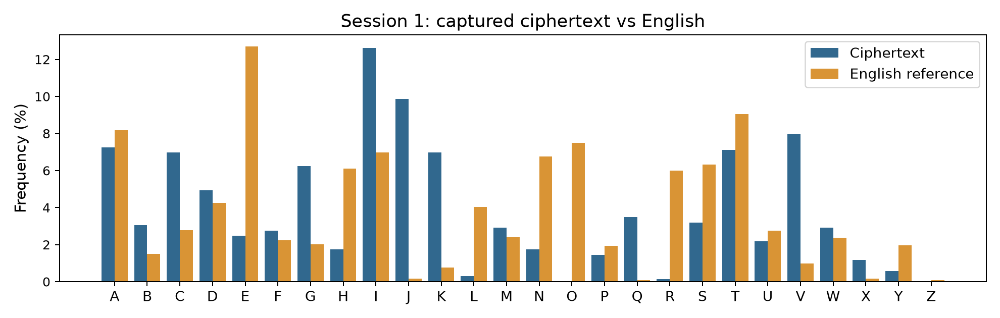
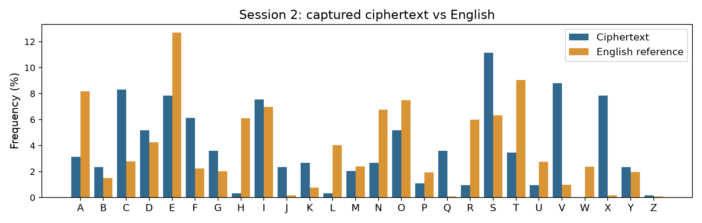
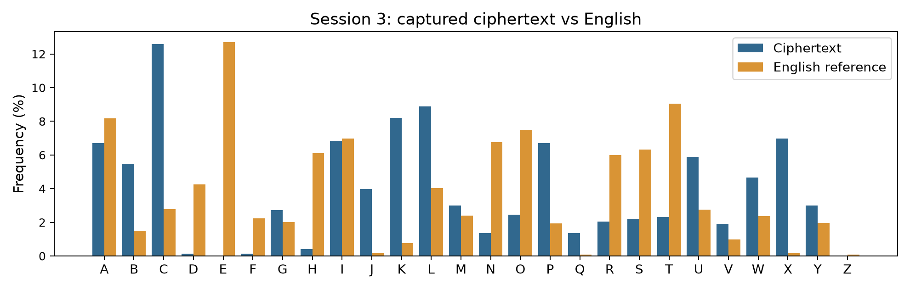
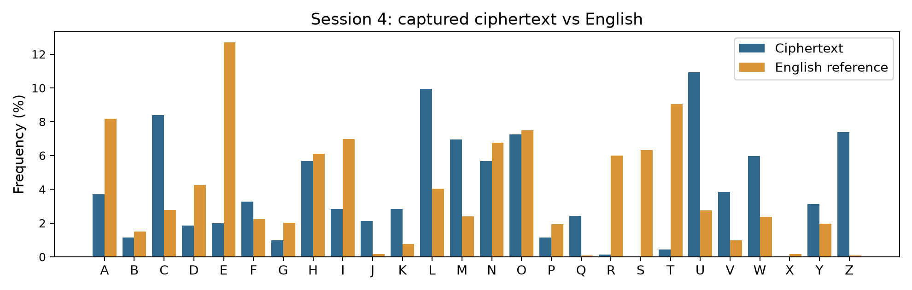
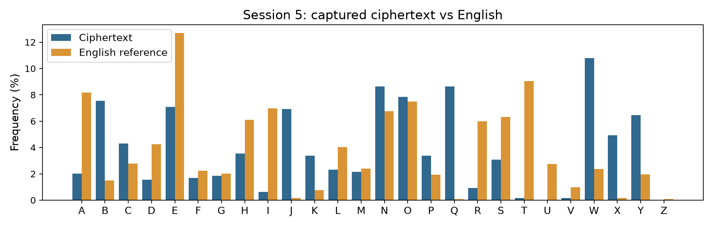
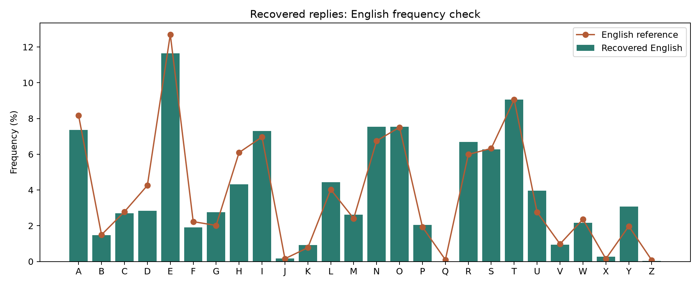
7. Actual desktop screenshots
Desktop captures retain their original content and taskbar; only the displayed taskbar date was edited to 22/10/2026 under the current assignment permission. Actual capture dates and packet/log timestamps remain unchanged. See the date-edit record in the accompanying project notes.


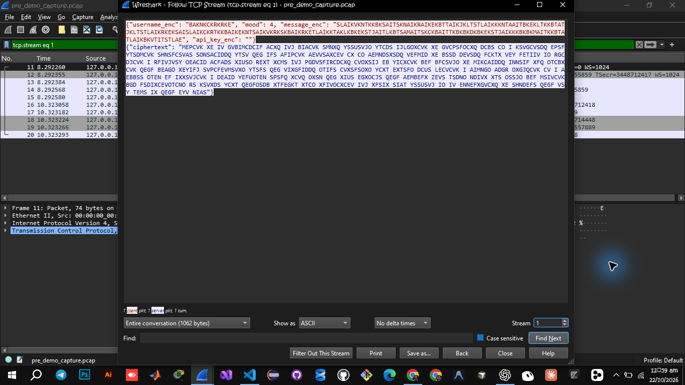

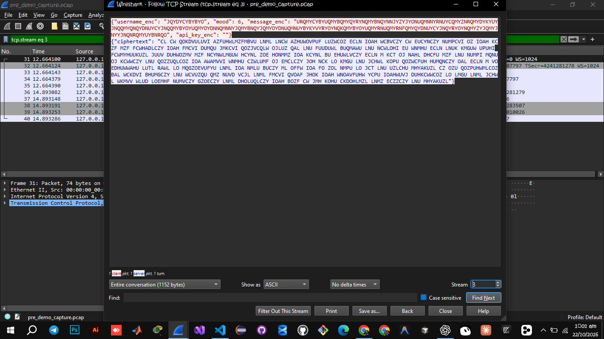
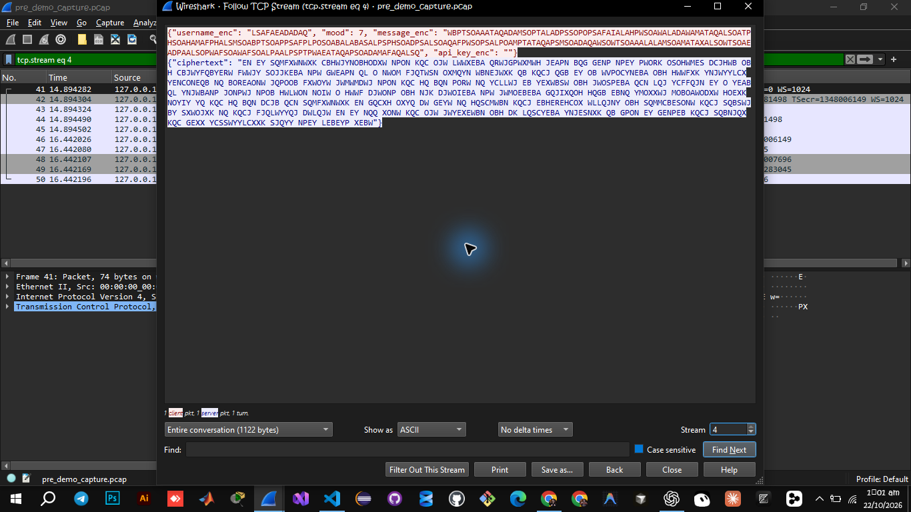

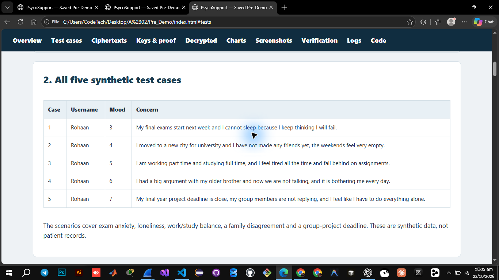

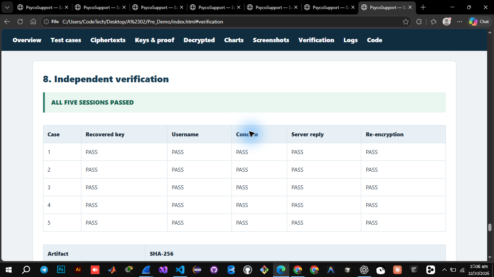

8. Independent verification
ALL FIVE SESSIONS PASSED
| Case | Recovered key | Username | Concern | Server reply | Re-encryption |
|---|---|---|---|---|---|
| 1 | PASS | PASS | PASS | PASS | PASS |
| 2 | PASS | PASS | PASS | PASS | PASS |
| 3 | PASS | PASS | PASS | PASS | PASS |
| 4 | PASS | PASS | PASS | PASS | PASS |
| 5 | PASS | PASS | PASS | PASS | PASS |
| Artifact | SHA-256 |
|---|---|
| Raw PCAP | 2e2b4726500ab366c3178257c45a998a50cf3f329c80e65b182162f5f43ee9e1 |
| Provided original server | 7149f7e524b70567a8d19360205105d7430dec5a9fa9557a4ab8bdf3b7ebf7dd |
The capture is the primary record. Screenshots support it; the verification separately compares recovered values with the original implementation and recorded client output.
Analysis time: 2026-11-19T00:57:19+05:00 Captured 5 complete sessions, 15 exact ciphertext fields. Recovered and decrypted all five sessions; 312 candidates tested per session. PASS: all five recovered keys, request fields, replies and round trips match.
9. Actual run and capture logs
run_log.txt
Actual run time: 2026-11-19T00:56:59+05:00 Host: rohaan-psylab Linux: 6.18.58.1-microsoft-standard-WSL2 Python 3.12.3 Capture scope: loopback interface lo; tcp port 9999 only Backend: Gemini API, instructor exception reported by student; NOT offline Case 1: mood=3; 833 response characters IT IS COMPLETELY UNDERSTANDABLE THAT YOU ARE FEELING OVERWHELMED RIGHT NOW GIVEN HOW MUCH PRESSURE SURROUNDS THESE UPCOMING EXAMS WHEN YOUR MIND RACES AT BEDTIME OUR BODIES STAY STUCK IN A STRESS RESPONSE THAT MAKES RESTING NEARLY IMPOSSIBLE ROHAAN YOU HAVE PREPARED EXTENSIVELY FOR THIS MOMENT AND YOUR WORTH IS NEVER DEFINED BY A SINGLE TEST SCORE TRY SETTING ASIDE TWENTY MINUTES EARLIER IN THE EVENING TO WRITE DOWN YOUR WORRIES WHICH SIGNALS YOUR BRAIN THAT IT IS SAFE TO LET THEM GO FOR THE NIGHT YOU MIGHT ALSO PRACTICE SLOW RHYTHMIC BREATHING IN BED TO HELP LOWER YOUR HEART RATE AND SHIFT AWAY FROM PANIC REMEMBER THAT YOU DO NOT NEED TO BE PERFECT TO SUCCEED AND TAKING CARE OF YOUR REST IS JUST AS IMPORTANT AS STUDYING BE GENTLE WITH YOURSELF TONIGHT KNOWING YOU HAVE THE INNER STRENGTH TO HANDLE WHATEVER TOMORROW BRINGS Case 2: mood=4; 757 response characters MOVING TO AN UNFAMILIAR CITY AND FACING EMPTY WEEKENDS WHILE ADJUSTING TO UNIVERSITY LIFE IS A GENUINELY OVERWHELMING EXPERIENCE ESPECIALLY WHEN YOU ARE CRAVING CONNECTION IT IS COMPLETELY NORMAL TO FEEL LONELY RIGHT NOW ROHAAN AS BUILDING A BRANDNEW SOCIAL CIRCLE TAKES BOTH TIME AND VULNERABILITY INSTEAD OF WAITING FOR FRIENDS TO MAGICALLY APPEAR TRY SHIFTING YOUR FOCUS TOWARD ENVIRONMENTS WHERE YOU NATURALLY SHARE INTERESTS WITH OTHERS LIKE JOINING A CAMPUS CLUB STUDYING IN A COFFEE SHOP OR ATTENDING A LOCAL WORKSHOP EVERY TINY STEP YOU TAKE OUTSIDE YOUR COMFORT ZONE HELPS PLANT THE SEEDS FOR MEANINGFUL RELATIONSHIPS BE GENTLE WITH YOURSELF THROUGH THIS TRANSITION AND TREAT EACH WEEKEND AS AN OPPORTUNITY TO EXPLORE YOUR NEW HOME AT YOUR OWN PACE Case 3: mood=5; 872 response characters BALANCING A PARTTIME JOB WITH FULLTIME STUDIES IS AN INCREDIBLE CHALLENGE AND IT MAKES COMPLETE SENSE THAT YOU ARE FEELING COMPLETELY EXHAUSTED RIGHT NOW WHEN YOUR PLATE IS OVERFLOWING EVEN THE SMALLEST TASKS CAN START TO FEEL LIKE INSURMOUNTABLE MOUNTAINS I WANT YOU TO KNOW ROHAAN THAT STRUGGLING TO KEEP UP UNDER THIS IMMENSE PRESSURE IS NOT A PERSONAL FAILURE BUT RATHER A CLEAR SIGN THAT YOUR CURRENT SCHEDULE IS UNSUSTAINABLE LET US LOOK AT WHERE WE MIGHT GENTLY RECLAIM SOME OF YOUR TIME AND ENERGY PERHAPS BY SCALING BACK YOUR WORK HOURS OR RENEGOTIATING ASSIGNMENT DEADLINES WITH YOUR PROFESSORS REMEMBER TO TREAT YOURSELF WITH DEEP COMPASSION DURING THIS HEAVY SEASON ACKNOWLEDGING THAT YOUR MENTAL HEALTH AND WELLBEING MUST ALWAYS COME BEFORE PERFECTION WE CAN WORK TOGETHER TO BUILD A MANAGEABLE ROUTINE THAT PROTECTS YOUR SLEEP AND HELPS YOU CATCH YOUR BREATH Case 4: mood=6; 845 response characters IT IS COMPLETELY UNDERSTANDABLE THAT THIS UNRESOLVED TENSION WITH YOUR SIBLING IS WEIGHING HEAVILY ON YOUR MIND AND DISRUPTING YOUR DAILY PEACE FAMILY CONFLICTS OFTEN CUT THE DEEPEST BECAUSE THE HISTORY WE SHARE WITH THEM MAKES EVERY DISAGREEMENT FEEL PERSONAL AND HIGHSTAKES RIGHT NOW ROHAAN YOU MIGHT BE WRESTLING WITH A MIX OF HURT PRIDE AND THE HEAVY ACHE OF MISSING THE CONNECTION YOU USUALLY SHARE INSTEAD OF WAITING FOR HIM TO MAKE THE FIRST MOVE CONSIDER REACHING OUT WITH A LOWPRESSURE TEXT JUST TO ACKNOWLEDGE THAT YOU HATE BEING AT ODDS YOU DO NOT HAVE TO FIX THE ENTIRE ARGUMENT IN ONE CONVERSATION BUT SIMPLY BREAKING THE SILENCE CAN HELP LIFT THAT DAILY CLOUD FROM YOUR SHOULDERS GIVE YOURSELF PERMISSION TO TAKE THAT FIRST SMALL STEP TOWARD HEALING KNOWING THAT PROTECTING YOUR BOND IS FAR MORE IMPORTANT THAN WINNING THE ARGUMENT Case 5: mood=7; 779 response characters IT IS COMPLETELY UNDERSTANDABLE THAT YOU ARE FEELING OVERWHELMED RIGHT NOW WITH THIS HEAVY ACADEMIC BURDEN AND UNRESPONSIVE PEERS CARRYING THE WEIGHT OF A TEAM PROJECT ALMOST ENTIRELY ON YOUR OWN IS AN EXHAUSTING AND DEEPLY STRESSFUL SITUATION TO NAVIGATE ROHAAN PLEASE REMEMBER THAT YOU DO NOT HAVE TO SUFFER IN SILENCE AND REACHING OUT FOR SUPPORT IS A SIGN OF STRENGTH RATHER THAN DEFEAT TAKE A DEEP BREATH AND TRY BREAKING THE REMAINING WORKLOAD DOWN INTO SMALLER MANAGEABLE DAILY TASKS SO YOU DO NOT BURN OUT COMPLETELY IT WOULD ALSO BE WISE TO DOCUMENT YOUR INDIVIDUAL EFFORTS AND COMMUNICATE YOUR CONCERNS CLEARLY TO YOUR PROFESSOR BEFORE IT IS TOO LATE YOU ARE RESILIENT AND BY FOCUSING STRICTLY ON WHAT IS WITHIN YOUR CONTROL YOU WILL SUCCESSFULLY CROSS THIS FINISH LINE tcpdump: listening on lo, link-type EN10MB (Ethernet), snapshot length 262144 bytes 50 packets captured 100 packets received by filter 0 packets dropped by kernel Analysis time: 2026-11-19T00:57:19+05:00 Captured 5 complete sessions, 15 exact ciphertext fields. Recovered and decrypted all five sessions; 312 candidates tested per session. PASS: all five recovered keys, request fields, replies and round trips match.
server.log
Backend: Gemini / gemini-3.5-flash-lite; capture: loopback TCP 9999
[SERVER] Groq-backed | Listening on 127.0.0.1:9999
[('127.0.0.1', 38690)] user=Rohaan mood=3 msg_len=86
[('127.0.0.1', 40296)] user=Rohaan mood=4 msg_len=103
[('127.0.0.1', 40298)] user=Rohaan mood=5 msg_len=108
[('127.0.0.1', 40306)] user=Rohaan mood=6 msg_len=104
[('127.0.0.1', 35438)] user=Rohaan mood=7 msg_len=122
tcpdump.log
tcpdump: listening on lo, link-type EN10MB (Ethernet), snapshot length 262144 bytes 50 packets captured 100 packets received by filter 0 packets dropped by kernel
client_output.txt
Case 1: mood=3; 833 response characters IT IS COMPLETELY UNDERSTANDABLE THAT YOU ARE FEELING OVERWHELMED RIGHT NOW GIVEN HOW MUCH PRESSURE SURROUNDS THESE UPCOMING EXAMS WHEN YOUR MIND RACES AT BEDTIME OUR BODIES STAY STUCK IN A STRESS RESPONSE THAT MAKES RESTING NEARLY IMPOSSIBLE ROHAAN YOU HAVE PREPARED EXTENSIVELY FOR THIS MOMENT AND YOUR WORTH IS NEVER DEFINED BY A SINGLE TEST SCORE TRY SETTING ASIDE TWENTY MINUTES EARLIER IN THE EVENING TO WRITE DOWN YOUR WORRIES WHICH SIGNALS YOUR BRAIN THAT IT IS SAFE TO LET THEM GO FOR THE NIGHT YOU MIGHT ALSO PRACTICE SLOW RHYTHMIC BREATHING IN BED TO HELP LOWER YOUR HEART RATE AND SHIFT AWAY FROM PANIC REMEMBER THAT YOU DO NOT NEED TO BE PERFECT TO SUCCEED AND TAKING CARE OF YOUR REST IS JUST AS IMPORTANT AS STUDYING BE GENTLE WITH YOURSELF TONIGHT KNOWING YOU HAVE THE INNER STRENGTH TO HANDLE WHATEVER TOMORROW BRINGS Case 2: mood=4; 757 response characters MOVING TO AN UNFAMILIAR CITY AND FACING EMPTY WEEKENDS WHILE ADJUSTING TO UNIVERSITY LIFE IS A GENUINELY OVERWHELMING EXPERIENCE ESPECIALLY WHEN YOU ARE CRAVING CONNECTION IT IS COMPLETELY NORMAL TO FEEL LONELY RIGHT NOW ROHAAN AS BUILDING A BRANDNEW SOCIAL CIRCLE TAKES BOTH TIME AND VULNERABILITY INSTEAD OF WAITING FOR FRIENDS TO MAGICALLY APPEAR TRY SHIFTING YOUR FOCUS TOWARD ENVIRONMENTS WHERE YOU NATURALLY SHARE INTERESTS WITH OTHERS LIKE JOINING A CAMPUS CLUB STUDYING IN A COFFEE SHOP OR ATTENDING A LOCAL WORKSHOP EVERY TINY STEP YOU TAKE OUTSIDE YOUR COMFORT ZONE HELPS PLANT THE SEEDS FOR MEANINGFUL RELATIONSHIPS BE GENTLE WITH YOURSELF THROUGH THIS TRANSITION AND TREAT EACH WEEKEND AS AN OPPORTUNITY TO EXPLORE YOUR NEW HOME AT YOUR OWN PACE Case 3: mood=5; 872 response characters BALANCING A PARTTIME JOB WITH FULLTIME STUDIES IS AN INCREDIBLE CHALLENGE AND IT MAKES COMPLETE SENSE THAT YOU ARE FEELING COMPLETELY EXHAUSTED RIGHT NOW WHEN YOUR PLATE IS OVERFLOWING EVEN THE SMALLEST TASKS CAN START TO FEEL LIKE INSURMOUNTABLE MOUNTAINS I WANT YOU TO KNOW ROHAAN THAT STRUGGLING TO KEEP UP UNDER THIS IMMENSE PRESSURE IS NOT A PERSONAL FAILURE BUT RATHER A CLEAR SIGN THAT YOUR CURRENT SCHEDULE IS UNSUSTAINABLE LET US LOOK AT WHERE WE MIGHT GENTLY RECLAIM SOME OF YOUR TIME AND ENERGY PERHAPS BY SCALING BACK YOUR WORK HOURS OR RENEGOTIATING ASSIGNMENT DEADLINES WITH YOUR PROFESSORS REMEMBER TO TREAT YOURSELF WITH DEEP COMPASSION DURING THIS HEAVY SEASON ACKNOWLEDGING THAT YOUR MENTAL HEALTH AND WELLBEING MUST ALWAYS COME BEFORE PERFECTION WE CAN WORK TOGETHER TO BUILD A MANAGEABLE ROUTINE THAT PROTECTS YOUR SLEEP AND HELPS YOU CATCH YOUR BREATH Case 4: mood=6; 845 response characters IT IS COMPLETELY UNDERSTANDABLE THAT THIS UNRESOLVED TENSION WITH YOUR SIBLING IS WEIGHING HEAVILY ON YOUR MIND AND DISRUPTING YOUR DAILY PEACE FAMILY CONFLICTS OFTEN CUT THE DEEPEST BECAUSE THE HISTORY WE SHARE WITH THEM MAKES EVERY DISAGREEMENT FEEL PERSONAL AND HIGHSTAKES RIGHT NOW ROHAAN YOU MIGHT BE WRESTLING WITH A MIX OF HURT PRIDE AND THE HEAVY ACHE OF MISSING THE CONNECTION YOU USUALLY SHARE INSTEAD OF WAITING FOR HIM TO MAKE THE FIRST MOVE CONSIDER REACHING OUT WITH A LOWPRESSURE TEXT JUST TO ACKNOWLEDGE THAT YOU HATE BEING AT ODDS YOU DO NOT HAVE TO FIX THE ENTIRE ARGUMENT IN ONE CONVERSATION BUT SIMPLY BREAKING THE SILENCE CAN HELP LIFT THAT DAILY CLOUD FROM YOUR SHOULDERS GIVE YOURSELF PERMISSION TO TAKE THAT FIRST SMALL STEP TOWARD HEALING KNOWING THAT PROTECTING YOUR BOND IS FAR MORE IMPORTANT THAN WINNING THE ARGUMENT Case 5: mood=7; 779 response characters IT IS COMPLETELY UNDERSTANDABLE THAT YOU ARE FEELING OVERWHELMED RIGHT NOW WITH THIS HEAVY ACADEMIC BURDEN AND UNRESPONSIVE PEERS CARRYING THE WEIGHT OF A TEAM PROJECT ALMOST ENTIRELY ON YOUR OWN IS AN EXHAUSTING AND DEEPLY STRESSFUL SITUATION TO NAVIGATE ROHAAN PLEASE REMEMBER THAT YOU DO NOT HAVE TO SUFFER IN SILENCE AND REACHING OUT FOR SUPPORT IS A SIGN OF STRENGTH RATHER THAN DEFEAT TAKE A DEEP BREATH AND TRY BREAKING THE REMAINING WORKLOAD DOWN INTO SMALLER MANAGEABLE DAILY TASKS SO YOU DO NOT BURN OUT COMPLETELY IT WOULD ALSO BE WISE TO DOCUMENT YOUR INDIVIDUAL EFFORTS AND COMMUNICATE YOUR CONCERNS CLEARLY TO YOUR PROFESSOR BEFORE IT IS TOO LATE YOU ARE RESILIENT AND BY FOCUSING STRICTLY ON WHAT IS WITHIN YOUR CONTROL YOU WILL SUCCESSFULLY CROSS THIS FINISH LINE
analysis_log.txt
Analysis time: 2026-11-19T00:57:19+05:00 Captured 5 complete sessions, 15 exact ciphertext fields. Recovered and decrypted all five sessions; 312 candidates tested per session. PASS: all five recovered keys, request fields, replies and round trips match.
10. Code and security discussion
Source is included for inspection. This viewer never executes it. The original cipher/protocol functions are loaded from the supplied Linux executable; the adapter routes its model call to Gemini.
client.py
"""Five synthetic sessions using the instructor's JSON/TCP protocol."""
import json
import socket
from pathlib import Path
from server import original
def armor(text):
return ''.join(chr(65 + (byte >> 4)) + chr(65 + (byte & 15))
for byte in text.encode('utf-8'))
def run():
root = Path(__file__).parent
cases = json.loads((root / 'test_cases.json').read_text())
results = []
for index, case in enumerate(cases, 1):
mood = case['mood']
b = 2 * mood
a = original['next_coprime_above'](b)
enc = lambda text: original['affine_encrypt'](armor(text), a, b)
payload = {'username_enc': enc(case['username']), 'mood': mood,
'message_enc': enc(case['concern']), 'api_key_enc': ''}
with socket.create_connection(('127.0.0.1', 9999), timeout=600) as conn:
conn.sendall(json.dumps(payload).encode())
parts = []
while data := conn.recv(65536):
parts.append(data)
reply = json.loads(b''.join(parts))
if 'error' in reply:
raise RuntimeError(reply['error'])
plain = original['affine_decrypt'](reply['ciphertext'], a, b)
results.append({'session': index, 'request': payload,
'response': reply, 'plaintext': plain})
print(f'Case {index}: mood={mood}; {len(plain)} response characters', flush=True)
print(plain, flush=True)
(root / 'output' / 'client_results.json').write_text(json.dumps(results, indent=2))
if __name__ == '__main__':
run()
server.py
"""Original server functions, with only Groq calls routed to Gemini.
Cipher, armor, mood keys, prompts, cleaning, TCP handling and logging are
loaded unchanged from the supplied executable. Bind is loopback-only.
"""
import json
import os
import sys
import types
import time
import urllib.request
import urllib.error
from pathlib import Path
from upstream_loader import load_server_code
ROOT = Path(__file__).parent
for line in (ROOT / '.env').read_text(encoding='utf-8-sig').splitlines() if (ROOT / '.env').exists() else []:
if '=' in line and not line.lstrip().startswith('#'):
name, value = line.split('=', 1)
os.environ.setdefault(name.strip(), value.strip().strip('\"\''))
MODEL = os.environ.get('GEMINI_MODEL', '')
def gemini_request(path, payload=None):
key = os.environ.get('GEMINI_API_KEY') or os.environ.get('GOOGLE_API_KEY')
if not key:
raise RuntimeError('Set GEMINI_API_KEY locally; do not submit the key')
req = urllib.request.Request('https://generativelanguage.googleapis.com/v1beta/' + path,
data=json.dumps(payload).encode() if payload is not None else None,
headers={'x-goog-api-key': key, 'Content-Type': 'application/json'})
for attempt in range(4):
try:
with urllib.request.urlopen(req, timeout=180) as response:
return json.load(response)
except urllib.error.HTTPError as exc:
if exc.code in (429, 500, 502, 503, 504) and attempt < 3:
time.sleep(5 * (attempt + 1))
continue
# Credentials and remote response bodies stay out of evidence.
raise RuntimeError(f'Gemini HTTP {exc.code}; check model access/quota locally') from None
def choose_model():
global MODEL
if not MODEL:
available = [m['name'].removeprefix('models/') for m in gemini_request('models').get('models', [])
if 'generateContent' in m.get('supportedGenerationMethods', [])]
preferred = ['gemini-3.5-flash-lite', 'gemini-3.1-flash-lite',
'gemini-2.5-flash-lite', 'gemini-2.5-flash']
MODEL = next((m for m in preferred if m in available), '')
if not MODEL:
MODEL = next((m for m in available if 'flash' in m and 'preview' not in m), '')
if not MODEL:
raise RuntimeError('Set GEMINI_MODEL to an available text model')
return MODEL
class GeminiGroqAdapter:
def __init__(self, api_key=None):
self.chat = types.SimpleNamespace(completions=self)
def create(self, model, temperature, top_p, max_tokens, messages):
system = '\n'.join(m['content'] for m in messages if m['role'] == 'system')
contents = [{'role': 'model' if m['role'] == 'assistant' else 'user',
'parts': [{'text': m['content']}]} for m in messages if m['role'] != 'system']
payload = {'systemInstruction': {'parts': [{'text': system}]}, 'contents': contents,
'generationConfig': {'temperature': temperature, 'topP': top_p,
'maxOutputTokens': max(1024, max_tokens)}}
body = gemini_request(f'models/{choose_model()}:generateContent', payload)
text = ''.join(p.get('text', '') for c in body.get('candidates', [])
for p in c.get('content', {}).get('parts', []) if not p.get('thought'))
if not text.strip():
raise RuntimeError('Gemini returned no response text; no synthetic fallback used')
return types.SimpleNamespace(choices=[types.SimpleNamespace(
message=types.SimpleNamespace(content=text))])
shim = types.ModuleType('groq')
shim.Groq = GeminiGroqAdapter
sys.modules['groq'] = shim
original = {'__name__': 'instructor_server'}
exec(load_server_code(), original)
original['HOST'] = '127.0.0.1'
if __name__ == '__main__':
print(f'Backend: Gemini / {choose_model()}; capture: loopback TCP 9999', flush=True)
(ROOT / 'output' / 'backend.json').write_text(json.dumps({'provider': 'Gemini', 'model': MODEL,
'offline': False, 'instructor_permission': 'Reported by student'}))
original['start']()
upstream_loader.py
"""Read the instructor's embedded Python 3.12 server without launching its binary."""
import marshal
import struct
import zlib
from pathlib import Path
def load_server_code():
data = (Path(__file__).parent / 'original_server').read_bytes()
cookie = data.rfind(b'MEI\x0c\x0b\x0a\x0b\x0e')
if cookie < 0:
raise ValueError('PyInstaller archive missing')
_, total, offset, size, version, _ = struct.unpack('!8sIIII64s', data[cookie:cookie+88])
if version != 312:
raise RuntimeError('Use WSL Python 3.12')
start = cookie + 88 - total
toc = data[start+offset:start+offset+size]
pos = 0
while pos < len(toc):
length, off, packed, unpacked, compressed, kind = struct.unpack('!IIIIBc', toc[pos:pos+18])
name = toc[pos+18:pos+length].split(b'\0')[0]
pos += length
if name == b'server' and kind == b's':
raw = data[start+off:start+off+packed]
if compressed:
raw = zlib.decompress(raw)
assert len(raw) == unpacked
return marshal.loads(raw)
raise ValueError('Server module missing')
scripts/extract_tcp.py
"""Export exact JSON ciphertext fields from the real loopback PCAP using TShark."""
import csv
import json
import os
import subprocess
import shutil
from collections import defaultdict
from pathlib import Path
ROOT = Path(__file__).resolve().parents[1]
TSHARK = os.environ.get('TSHARK') or shutil.which('tshark') or '/home/codetech/.local/psy-tools/bin/tshark'
def main():
pcap = ROOT / 'evidence/capture.pcap'
fields = ['frame.number', 'frame.time_epoch', 'tcp.stream', 'tcp.srcport',
'tcp.dstport', 'tcp.seq', 'tcp.payload']
cmd = [TSHARK, '-r', str(pcap), '-Y', 'tcp.port == 9999 && tcp.len > 0', '-T', 'fields']
for field in fields:
cmd += ['-e', field]
result = subprocess.run(cmd, capture_output=True, text=True, check=True)
(ROOT / 'evidence/packet_payloads.tsv').write_text(result.stdout)
streams = defaultdict(lambda: {'request': {}, 'response': {}, 'frames': []})
for line in result.stdout.splitlines():
frame, stamp, index, src, dst, seq, payload = line.split('\t')
stream = streams[int(index)]
direction = 'request' if dst == '9999' else 'response'
for offset, byte in enumerate(bytes.fromhex(payload.replace(':', ''))):
position = int(seq) + offset
if position in stream[direction]:
assert stream[direction][position] == byte, 'Conflicting TCP retransmission'
stream[direction][position] = byte
stream['frames'].append(int(frame))
stream.setdefault('time', stamp)
rows = []
sessions = []
for index, stream in sorted(streams.items()):
objects = {}
for direction in ['request', 'response']:
positions = sorted(stream[direction])
if not positions:
continue
assert positions == list(range(positions[0], positions[-1]+1)), 'TCP gap'
objects[direction] = json.loads(bytes(stream[direction][p] for p in positions))
if not {'request', 'response'} <= objects.keys():
continue
assert 'ciphertext' in objects['response'], 'Server error or incomplete run'
session = len(sessions) + 1
mood = objects['request']['mood']
for direction, field in [('Client->Server', 'username_enc'),
('Client->Server', 'message_enc'), ('Server->Client', 'ciphertext')]:
obj = objects['request' if direction.startswith('Client') else 'response']
cipher = obj[field]
rows.append({'session': session, 'direction': direction, 'field': field,
'mood': mood, 'tcp_stream': index, 'timestamp_epoch': stream['time'],
'length_chars': len(cipher), 'ciphertext': cipher})
sessions.append({'session': session, 'tcp_stream': index, 'mood': mood,
'frames': stream['frames'], **objects})
follow = subprocess.run([TSHARK, '-r', str(pcap), '-q', '-z', f'follow,tcp,ascii,{index}'],
capture_output=True, text=True, check=True)
(ROOT / f'evidence/session_{session}_follow_tcp.txt').write_text(follow.stdout)
assert len(sessions) == 5 and len(rows) == 15, 'Expected five complete sessions'
with (ROOT / 'ciphertexts.csv').open('w', newline='', encoding='utf-8') as output:
writer = csv.DictWriter(output, fieldnames=list(rows[0])); writer.writeheader(); writer.writerows(rows)
(ROOT / 'output/captured_sessions.json').write_text(json.dumps(sessions, indent=2))
print(f'Captured {len(sessions)} complete sessions, {len(rows)} exact ciphertext fields.')
if __name__ == '__main__':
main()
scripts/analyze.py
"""Ciphertext-only recovery per session; no server imports or supplied key mapping."""
import csv
import json
from collections import Counter
from math import gcd
from pathlib import Path
import matplotlib
matplotlib.use('Agg')
import matplotlib.pyplot as plt
try:
from common import ALPHA, ENGLISH_FREQ, affine_decrypt, chi_squared, egcd_steps
except ModuleNotFoundError:
from .common import ALPHA, ENGLISH_FREQ, affine_decrypt, chi_squared, egcd_steps
ROOT = Path(__file__).resolve().parents[1]
OUT = ROOT / 'output'
def dearmor(text):
text = text.replace(' ', '')
assert len(text) % 2 == 0
pairs = [(ord(text[i])-65, ord(text[i+1])-65) for i in range(0, len(text), 2)]
assert all(0 <= hi < 16 and 0 <= lo < 16 for hi, lo in pairs)
return bytes((hi << 4) | lo for hi, lo in pairs).decode('utf-8')
def main():
rows = list(csv.DictReader((ROOT/'ciphertexts.csv').open(encoding='utf-8')))
results, frequencies, decrypted, proof = [], [], [], []
fig, axes = plt.subplots(5, 1, figsize=(11, 17), constrained_layout=True)
for session in range(1, 6):
group = [r for r in rows if int(r['session']) == session]
cipher = next(r['ciphertext'] for r in group if r['field'] == 'ciphertext')
ranked = sorted((chi_squared(affine_decrypt(cipher,a,b)), a,b)
for a in range(26) if gcd(a,26)==1 for b in range(26))
score,a,b = ranked[0]
_, inverse, euclid = egcd_steps(a,26)
plain = affine_decrypt(cipher,a,b)
counts = Counter(c for c in cipher if c in ALPHA); n=sum(counts.values())
pc = Counter(c for c in plain if c in ALPHA)
for c in ALPHA:
frequencies.append({'session':session,'letter':c,'cipher_count':counts[c],
'cipher_percent':round(100*counts[c]/n,4),
'decrypted_percent':round(100*pc[c]/n,4),'english_percent':ENGLISH_FREQ[c]})
top=counts.most_common(6)
ce,ct=(4*a+b)%26,(19*a+b)%26
lines=[f'SESSION {session}: {n} ciphertext letters; mood is not used for recovery.',
'Most frequent ciphertext letters: '+str(top),
'Test all 312 valid Affine candidates; rank decrypted English by chi-squared.',
'Leading candidates (chi-squared, a, b): '+str(ranked[:5]),
f'Winning mapping: E -> {ALPHA[ce]}, T -> {ALPHA[ct]}.',
f'4a+b = {ce} (mod 26); 19a+b = {ct} (mod 26).',
f'Subtraction gives 15a = {(ct-ce)%26} (mod 26).',
'26 = 1*15+11; 15 = 1*11+4; 11 = 2*4+3; 4 = 1*3+1.',
'Back substitution: 1 = 7*15 - 4*26; inverse(15) = 7.',
f'a = 7*{(ct-ce)%26} mod 26 = {a}; b = {ce}-4*{a} mod 26 = {b}.',
f'gcd({a},26)=1. Extended Euclid for decryption:']+euclid+[
f'inverse(a)={inverse}; {a}*{inverse} = {(a*inverse)//26}*26 + 1.',
f'D(y) = {inverse}*(y-{b}) mod 26.',
'English E/T mappings are candidate hypotheses, not guaranteed rank-1/rank-2 identities.',
'Independent checks: decoded UTF-8 request fields and re-encryption equality.']
for r in group:
text=affine_decrypt(r['ciphertext'],a,b)
if r['field']!='ciphertext':text=dearmor(text)
decrypted.append({'session':session,'direction':r['direction'],'field':r['field'],'plaintext':text})
reencrypted=''.join(ALPHA[(a*(ord(c)-65)+b)%26] if c in ALPHA else c for c in plain)
assert reencrypted==cipher
results.append({'session':session,'a':a,'b':b,'a_inverse':inverse,'chi_squared':score,
'runner_up_chi_squared':ranked[1][0],'top5':ranked[:5],
'cipher_letters':n,'plaintext':plain,'reencryption_matches':True})
proof.extend(lines+[''])
ax=axes[session-1]; x=list(range(26))
ax.bar([v-.2 for v in x],[100*counts[c]/n for c in ALPHA],width=.4,label='Ciphertext',color='#31688e')
ax.bar([v+.2 for v in x],[ENGLISH_FREQ[c] for c in ALPHA],width=.4,label='English reference',color='#d99435')
ax.set_xticks(x,ALPHA);ax.set_ylabel('Frequency (%)');ax.set_title(f'Session {session}: ciphertext vs English');ax.legend(fontsize=8)
chart,cax=plt.subplots(figsize=(11,3.5))
cax.bar([v-.2 for v in x],[100*counts[c]/n for c in ALPHA],width=.4,label='Ciphertext',color='#31688e')
cax.bar([v+.2 for v in x],[ENGLISH_FREQ[c] for c in ALPHA],width=.4,label='English reference',color='#d99435')
cax.set_xticks(x,ALPHA,fontsize=11);cax.set_ylabel('Frequency (%)',fontsize=12)
cax.set_title(f'Session {session}: captured ciphertext vs English',fontsize=14)
cax.legend(fontsize=11);chart.tight_layout()
chart.savefig(OUT/f'session_{session}_frequency.png',dpi=180);plt.close(chart)
fig.savefig(OUT/'frequency_by_session.png',dpi=180);plt.close(fig)
fig,ax=plt.subplots(figsize=(11,4.5));x=list(range(26))
total=Counter(c for result in results for c in result['plaintext'] if c in ALPHA);n=sum(total.values())
ax.bar(x,[100*total[c]/n for c in ALPHA],label='Recovered English',color='#2b7b70')
ax.plot(x,[ENGLISH_FREQ[c] for c in ALPHA],label='English reference',color='#b35b35',marker='o')
ax.set_xticks(x,ALPHA);ax.set_ylabel('Frequency (%)');ax.set_title('Recovered replies: English frequency check');ax.legend();fig.tight_layout()
fig.savefig(OUT/'decrypted_vs_english.png',dpi=180);plt.close(fig)
for filename,data in [('frequency_table.csv',frequencies),('decrypted.csv',decrypted)]:
with (OUT/filename).open('w',newline='',encoding='utf-8') as f:
w=csv.DictWriter(f,fieldnames=list(data[0]));w.writeheader();w.writerows(data)
(OUT/'recovered_keys.json').write_text(json.dumps(results,indent=2))
(OUT/'key_recovery_proof.txt').write_text('\n'.join(proof))
(OUT/'decrypted_sessions.txt').write_text('\n\n'.join(f"Session {r['session']} / {r['field']}\n{r['plaintext']}" for r in decrypted))
print('Recovered and decrypted all five sessions; 312 candidates tested per session.')
if __name__=='__main__':main()
scripts/verify_results.py
"""Independent post-recovery checks, kept separate from the attack."""
import csv
import hashlib
import json
import sys
from pathlib import Path
ROOT=Path(__file__).resolve().parents[1]
sys.path.insert(0,str(ROOT))
from server import original
def main():
recovered=json.loads((ROOT/'output/recovered_keys.json').read_text())
actual=json.loads((ROOT/'output/client_results.json').read_text())
cases=json.loads((ROOT/'test_cases.json').read_text())
decoded=list(csv.DictReader((ROOT/'output/decrypted.csv').open()))
checks=[]
for key,result,case in zip(recovered,actual,cases,strict=True):
session=key['session'];b=2*case['mood'];a=original['next_coprime_above'](b)
fields={r['field']:r['plaintext'] for r in decoded if int(r['session'])==session}
check={'session':session,'key_matches_original_after_recovery':(key['a'],key['b'])==(a,b),
'response_matches_client':key['plaintext']==result['plaintext'],
'username_matches_input':fields['username_enc']==case['username'],
'concern_matches_input':fields['message_enc']==case['concern'],
'reencryption_matches':key['reencryption_matches']}
assert all(v for k,v in check.items() if k!='session'),check
checks.append(check)
assert len(recovered)==5 and len(actual)==5
assert sum(1 for _ in csv.DictReader((ROOT/'ciphertexts.csv').open()))==15
pcap=ROOT/'evidence/capture.pcap'
report={'all_passed':True,'session_checks':checks,'ciphertext_fields':15,
'pcap_sha256':hashlib.sha256(pcap.read_bytes()).hexdigest(),
'original_server_sha256':hashlib.sha256((ROOT/'original_server').read_bytes()).hexdigest(),
'backend':json.loads((ROOT/'output/backend.json').read_text())}
(ROOT/'output/verification.json').write_text(json.dumps(report,indent=2))
print('PASS: all five recovered keys, request fields, replies and round trips match.')
if __name__=='__main__':main()
Optional live browser interface: web-demo guide and current verification status. Seven local HTTP checks and five actual native WSL/Gemini browser cases passed. Their separate capture and records are in the live-web validation folder. The recorded results on this page are separately verified.
Why the wrapper fails
Affine substitution preserves language patterns and has only 312 keys. Mood is sent in clear and deterministically reveals the key schedule. Encoding input bytes as A–P pairs does not add cryptographic security. Repeated words/names create clues; no invented fixed disclaimer is added.
Better alternatives
Use a UNIX-domain socket with owner-only access and peer credentials for local access control, or authenticated TLS 1.3 for encrypted TCP. A self-signed certificate must be explicitly trusted/pinned; do not disable verification. Protect plaintext logs separately.
Gemini makes the original run cloud-assisted. This saved pack itself works offline. Model-generated replies are synthetic lab output, not medical advice.
References: Instructor source · Gemini API · TShark · TLS 1.3. English frequencies: Lewand, Cryptological Mathematics (2000). AI assisted preparation; artifacts come from real controlled runs.